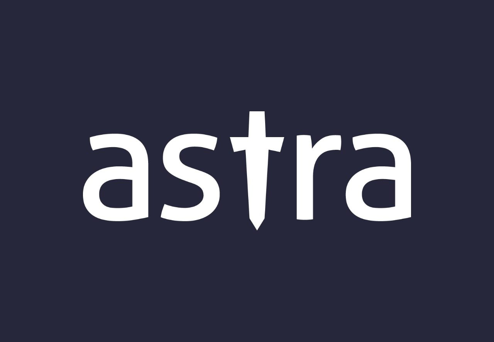

Associate Consultant - Data & Application Security
Utilising the techniques of DAST and SAST, I perform penetration testing and exploitation on web applications and API endpoints. I assist client teams in the Sec part of DevSecOps cycle by helping them understand the vulnerabilities present in the application/endpoint and suggesting customised fixes as per product’s functionality and use-cases it covers.By following Agile methodology, it enables me in quick monitoring of reporting and patching of the vulnerabilities, keeping the product compliant with various global data regulation policies and achieving client satisfaction as well.
Recognition Received
Data & Application Security Intern
As an intern, worked in multiple projects which dealt with performing penetration testing of web applications, exploit development using ROP Chain technique and Egg Hunters and developing automation framework for manual penetration testing of web applications.
Certificate of Appreciation
Digital Evidence Examiner Trainee
Worked with Income Tax department to help acquire digital evidence using different software utilities from raid sites and analyze them. Assisted my team in completing documentations on Digital Forensics for NCRB officials.
Certificate of Appreciation

Technical Content Writer
Authored articles describing different types of web application vulnerabilities present in various CMS platforms and how they can impact business logic and continuity.
Certificate of Appreciation
Software Engineering Intern
Helped the company to transform to a paperless system which would register and monitor users over the company's wireless network by developing a web application.
Certificate of Appreciation
Graphic Designing Intern
Learned how to make eye-catching posters which enhanced my knowledge about how people are attracted to click-baits or phishing tools available online.
Certificate of Appreciation

Content Writing Intern
Authored content material to connect to the minds of netizens and understand how influencing content is created in social engineering attacks or hacktivism.
Certificate of Appreciation
Learn more about me >>